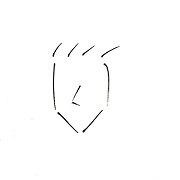

我的兴趣爱好
在这里，你可以看到关于我兴趣爱好的介绍，以及我安利的音乐、电影、动画等等。
花开如火，也如寂寞
想说的话
林卓凡可能是个奇怪的人，他有自己的小癖好，有自己的小情绪，有自己的白月光，有自己的意难平，有自己的心所向。有时候，发自心底地喜欢一样东西，并不是它多么有趣，并不是它让你引人注目，并不是它能让你从此变得与众不同；有时候，只因为它刚好和你的基因相契合，只因为它能给孤身一人的你温暖，只因为它让你回忆起过去、看到美好，哪怕别人多么看不起这个“平凡”的爱好，它也是将伴你一生的港湾。人易老，事多妨，梦难长，一点深情，半壁斜阳。
愿如山川般活着，纵然沉默一生。或是时而感伤，时而欣喜，或是时而对未来充满期待，时而又被自己蠢哭，或是时而像江湖游子逍遥自在，时而又被生活击垮，积攒的体面撒落一地。我不知何为生活的答案，我不知道我要去到何处，我还在探寻我的方向。日子每天看似平淡无奇波澜不惊机械地前进，可回头是才会猛然发现，命运竟是在一路狂奔。
“如果陪我到最后的是你，一路风雨也没关系；如果陪我到最后的不是你，我们之间的点点滴滴我一点也不会忘记；如果最后你会回来，晚一点也没关系”，这是我的意难平，这是我的千千结，我怕在北京这座华灯璀璨的城市，我会失了自己，我会妥协，我会将就，我不愿意。从你的全世界路过，要把全盛的我都活过。请往前走，不必回头。
走在路上的人啊，你不要频频回首，既耽误了自己，也辜负了山水。
总之岁月漫长，然而值得等待。